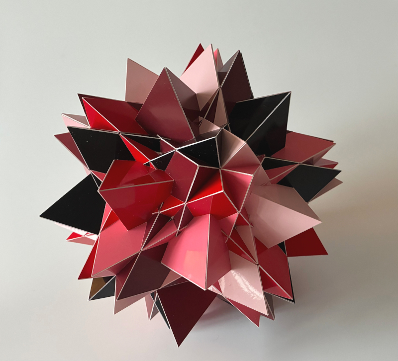
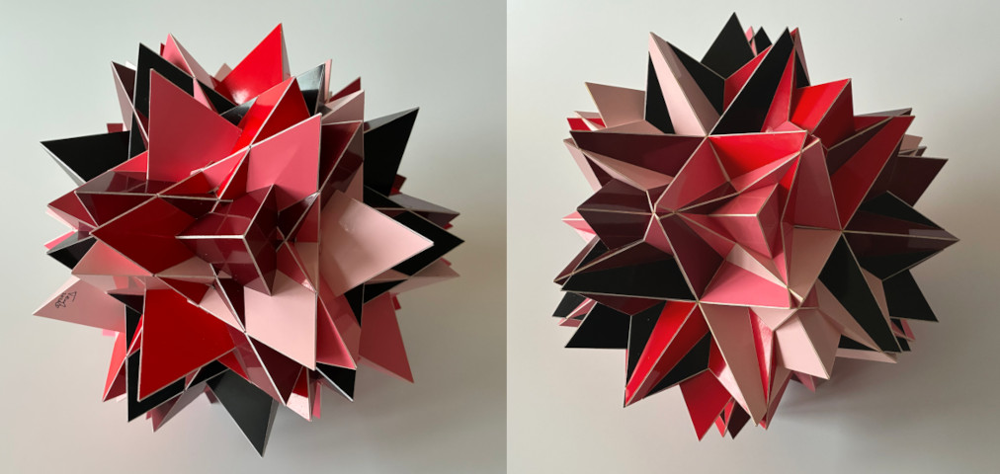

Compound of Twenty Tetrahedra (A)

This is a rigid compound of twenty tetrahedra that has the same symmetry as an icosahedron Each tetrahedron shares one 3-fold axis and the three reflection planes sharing that axis with those in the compound The fact that this is a rigid compound means that you cannot rotate one base tetrahedron (called the descriptor) around an axis and then get another compound with the same amount of tetrahedra after applying the symmetries. This is obvious, since as soon as you rotate one tetrahedron, at least two of the mirror planes aren't shared with the final symmetry anymore. Usually this means that there is only one compound with these properties, however in this case another rigid compound of twenty tetrahedra exists with the same properties. These variants are indicated by an 'A' and 'B', of which this one is the 'A' variant. These compounds are defined in an unpublished book titled "Compound Lines of Polyhedra" by Hugo Verheyen.
I built both variants and both have the challenge that there are tiny pieces involved. Both models has are of the same size and their diameter is around 28 cm, which is around 11 inches. I don't know how many hours I put into building this model, but I started building this model in September 2025 and I finished in January 2026.
To understand why two variants exist despite the fact that there is no rotational freedon, consider the image below where both variants are shown next to eachother. For both models the camera looks straight into a 3-fold symmetry axis. For the left one this axis is shared with the 3-fold axis of a bordeaux-red tetrahedron and on the right side the same holds for a pink tetrahedron. For both of these there is an edge that points from the middle to the left side. For the left model the edge points towards a 5-fold axis, while for the right model it points towards a 2-fold axis and the 5-fold axis is located on the right side instead. This way one can recognise that two positions exist where the three mirror planes sharing the 3-fold axis are shared with the final symmetry.

Links
Last Updated
2026-01-25